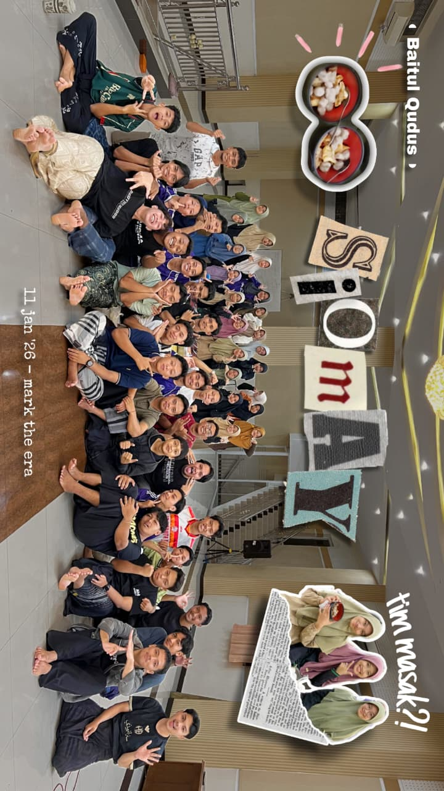
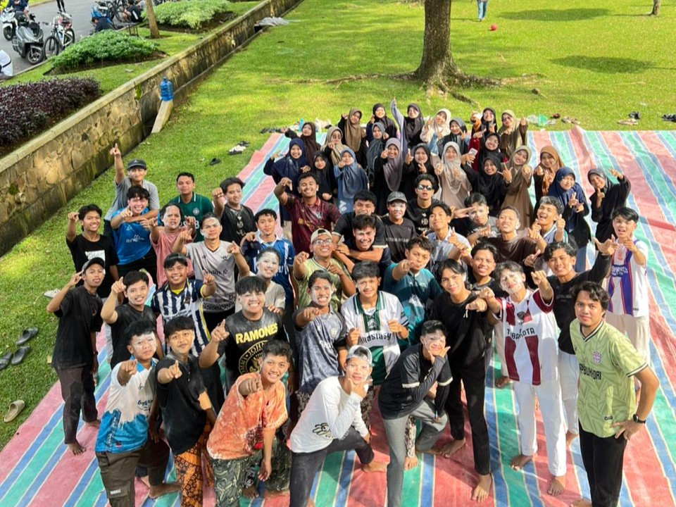

Beranda
Tentang Kami
Layanan
Galery
Kontak
Dokumentasi Kegiatan
Santri ponpes Baitul Qudus dalam rangka Pengajian Akhir Tahun
.

Acara Keakraban Makan Siomay Ikan Tongkol

Mabar (Main Bareng) periode Abu Daud